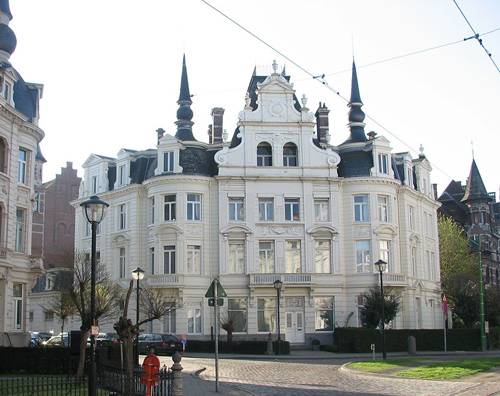
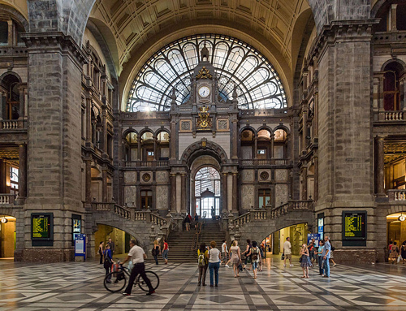
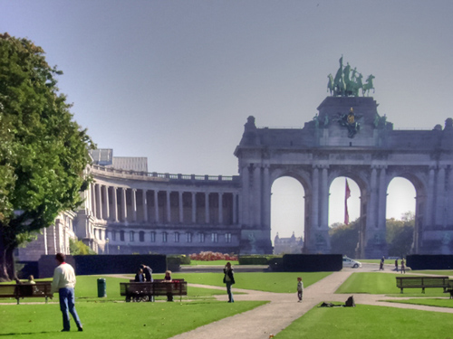
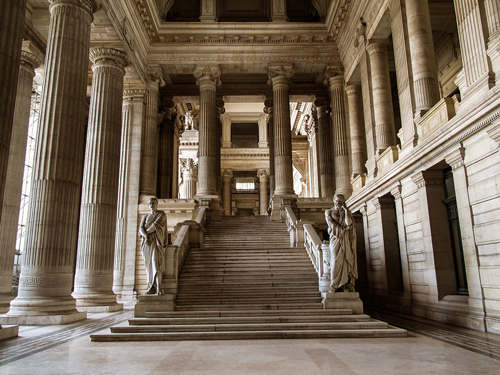
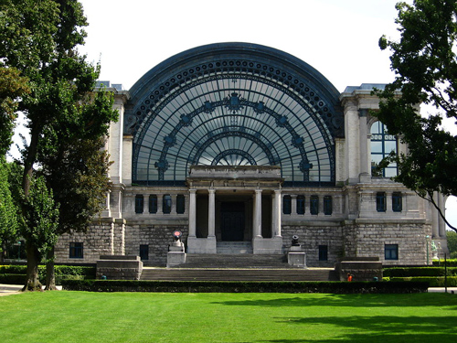
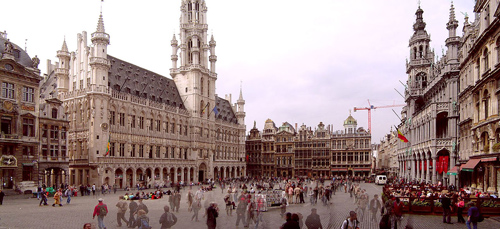
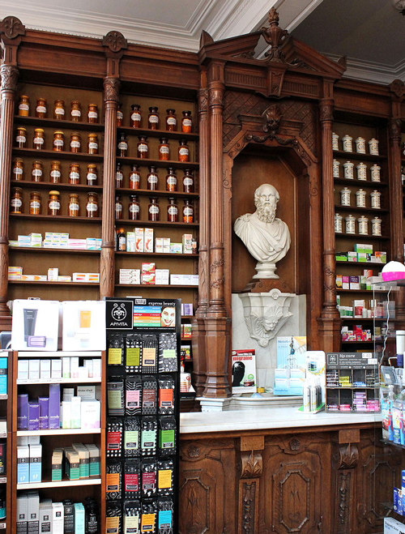

Cogels-Osylei 41 Antwerp (one of the richest streets in Antwerp) used as the 'Deroulard House'.

Antwerp Station is used as 'Brussels Railway Station'.

The Arc de Triomphe in Jubel Park appears in the background.

Le Palais de Justice in Brussels.

Entrance to the North Hall of the Cinquantenaire - now an aerospace museum.

The Grand Place in Brussels.

Boulevard du Jardin Botanique 36 used as 'Ferraud's pharmacy'.